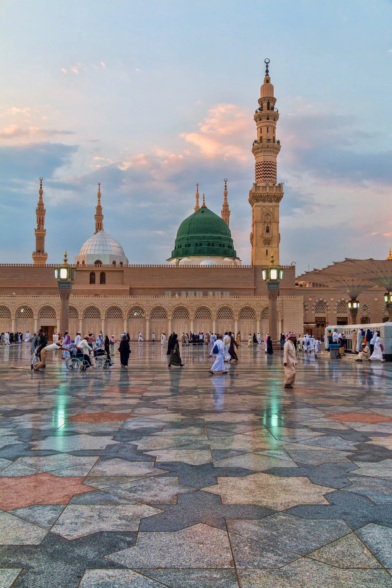
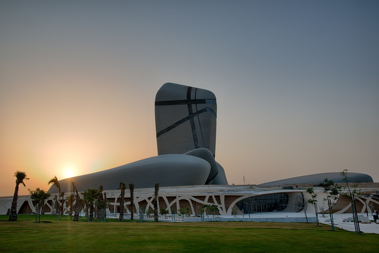
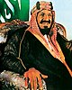
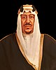
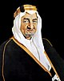
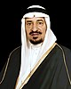
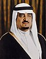
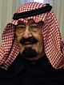
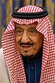

Saudi Arabia, officially the Kingdom of Saudi Arabia (KSA), is a country on the Arabian Peninsula in Western Asia.
It has a land area of about 2,150,000 km2 (830,000 sq mi), making it the fifth-largest country entirely in Asia, the second-largest in the Arab world, and the largest in Western Asia.
It is bordered by the Red Sea to the west, Jordan, Iraq, and Kuwait to the north, the Persian Gulf, Qatar, and the United Arab Emirates to the east, Oman to the southeast, and Yemen to the south.
Bahrain is an island country off the east coast.
The Gulf of Aqaba in the northwest, whose maximum width is 24 km (15 mi), separates Saudi Arabia from Egypt.
Saudi Arabia is the only country with a coastline along both the Red Sea and the Persian Gulf, and most of its terrain consists of arid desert, lowland, steppe, and mountains.
Its capital and largest city is Riyadh. The country is home to Mecca and Medina, the two holiest cities in Islam.
Riyadh (Arabic: الرياض, lit.: 'The Gardens' Najdi is the capital of Saudi Arabia and one of the largest city on the Arabian Peninsula.
Located in the center of the an-Nafud desert, on the eastern part of the Najd plateau,
the city sits at an average of 600 meters (2,000 ft) above sea level, and receives around 5 million tourists each year, making it the forty-ninth most visited city in the world and the 6th in the Middle East.
Riyadh had a population of 7.6 million people in 2019, making it the most-populous city in Saudi Arabia, 3rd most populous in the Middle East, and 38th most populous in Asia.
Riyadh is the political and administrative center of Saudi Arabia.
The Consultative Assembly (also known as the Shura or Shura Council), the Council of Ministers of Saudi Arabia, the King and the Supreme Judicial Council of Saudi Arabia are all situated in the city.
Alongside these four bodies that form the core of the legal system of Saudi Arabia, the headquarters of other major and minor governmental bodies are also located in Riyadh.
The city hosts 112 foreign embassies, most of which are located in the as-Safarat district or Diplomatic Quarter (Arabic: حي السفارات, romanized: Hayy as-Safarat, lit.'District of Embassies') in the western reaches of the city.
Makkah
Arabic: مكة, romanized: Makkah, is a city and administrative center of the Mecca Province of Saudi Arabia, and the holiest city in Islam.
It is 70 km (43 mi) inland from Jeddah on the Red Sea, in a narrow valley 277 m (909 ft) above sea level.
Its last recorded population was 1,578,722 in 2015.
Its estimated metro population in 2020 is 2.042 million, making it the third-most populated city in Saudi Arabia after Riyadh and Jeddah.
Pilgrims more than triple this number every year during the Ḥajj pilgrimage, observed in the twelfth Hijri month of Dhūl-Ḥijjah.
Mecca is generally considered "the fountainhead and cradle of Islam".
Mecca also is reputedly the birthplace of the Islamic prophet Muhammad.
The Hira cave atop the Jabal al-Nur ("Mountain of Light") is just outside the city and where Muslims believe the Quran was first revealed to Muhammad.
Visiting Mecca for the Hajj is an obligation upon all able Muslims.
The Great Mosque of Mecca, known as the Masjid al-Haram, is home to the Ka'bah, believed by Muslims to have been built by Abraham and Ishmael.
It is one of Islam's holiest sites and the direction of prayer for all Muslims (qibla).

Madinah
لمدينة, al-Madina, Hejazi, is the second-holiest city in Islam and the capital of the Medina Province of Saudi Arabia.
As of 2020, the estimated population of the city is 1,488,782, making it the fourth-most populous city in the country.
Located at the core of the Medina Province in the western reaches of the country,
the city is distributed over 589 square kilometres (227 sq mi), of which 293 square kilometres (113 sq mi) constitutes the city's urban area,
while the rest is occupied by the Hejaz Mountains, empty valleys, agricultural spaces and older dormant volcanoes.
Medina is generally considered to be the "cradle of Islamic culture and civilization".
The city is considered to be the second-holiest of three key cities in Islamic tradition, with Mecca and Jerusalem serving as the holiest and third-holiest cities, respectively.
Al-Masjid al-Nabawi is of exceptional importance in Islam and serves as burial site of the last Islamic prophet, Muhammad, by whom the mosque was built in 622 CE.
Observant Muslims usually visit his tomb, or rawdhah, at least once in their lifetime during a pilgrimage known as Ziyarat, although this is not obligatory.
The original name of the city before the advent of Islam was Yathrib and it is referred to by this name in Chapter 33 of the Quran.
It was renamed to Madīnat an-Nabī after Muhammad's death and later to al-Madinah al-Munawwarah before being simplified and shortened to its modern name,
Madinah, from which the English-language spelling of "Medina" is derived. Saudi road signage uses Madinah and al-Madinah al-Munawwarah interchangeably.
Petra might be the Nabatean’s best-known city, but Madain Saleh is its monumental, and best-preserved long-lost cousin.
The ancient city, situated near the oasis town of Al Ula, was the first site to be recognized by UNESCO in the country, and is one of the Saudi Arabia’s best landmarks.
The list wouldn’t be complete without mentioning Al Ula, of course.
The archaeological gem has been hidden in plain sight, having remained relatively unknown until recently.
Spanning almost 14,000 square kilometres, the desert land is home to Madain Saleh, an oasis, as well as hundreds of other rock monuments.
Despite having opened only two years ago, the King Abdulaziz Center for World Culture is essentially a landmark of its own in Saudi Arabia.
No holiday to the kingdom is complete without a visit to the creative hub.
After all, the centre has already been listed in Time magazine as one the world’s top places to visit.

Situated on the outskirts of the more-conservative Saudi Capital, Riyadh, Diriyah is a breath of fresh air.
The town, which was the original home of the Saudi royal family, has transformed in recent years.
It’s now also home to the Saudi Museum of Modern Art, which is located right in the midst of palm plantations and is made of traditional mud-brick architecture.
Jeddah ghair, they say. The historic city of Al Balad is one of the reasons Jeddah is so different from the rest of the Kingdom.
Having been founded in the 7th century, Al Balad was once the centre point of Jeddah, and is its oldest neighbourhood.
It’s classified as a World Heritage Site, and once you take a walk through its maze-like streets and torn-up (but stunning) buildings, you’ll understand why.
| Image | Name | Lifespan | Reign Start |
|---|---|---|---|
|  | Abdul Aziz | 15 January 1875 – 9 November 1953 (aged 78) | 22 September 1932 (aged 57) |
|  | Saud | 12 January 1902 – 23 February 1969 (aged 67) | 9 November 1953 (aged 51) |
|  | Faisal | 14 April 1906 – 25 March 1975 (aged 68) | 2 November 1964 (aged 58) |
|  | Khalid | 13 February 1913 – 13 June 1982 (aged 69) | 25 March 1975 (aged 62) |
|  | Fahad | 16 March 1921 – 1 August 2005 (aged 84) | 13 June 1982 (aged 61) |
|  | Abdullah | 1 August 1924 – 23 January 2015 (aged 90) | 1 August 2005 (aged 81) |
|  | Salman | 31 December 1935 (age 86) | 23 January 2015 (aged 79) |
The information in this web page is collected and summurized from Wikipedia | Mille ---- TopSite